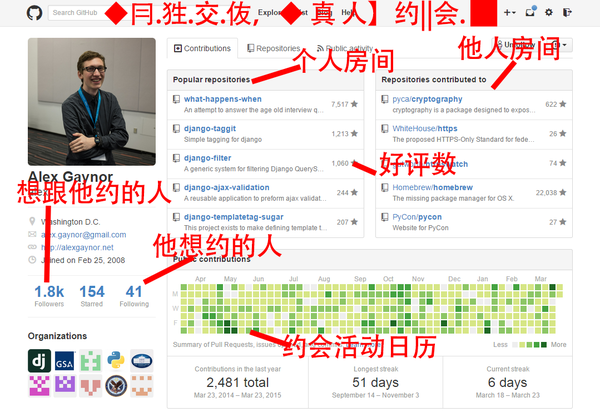

Git
先来看张图
Git是什么？
Git是便捷，高效的代码版本管理工具
使用场景
- 当你在频繁的代码改动后， 发现新的代码有问题， 需要改回之前的代码， 你会怎么做？
安装Git
linux:
$ sudo apt-get install git
$ git config --global user.name "Your Name"
$ git config --global user.email "email@example.com"
创建版本库
- 版本库又名仓库(repository)，简单理解成一个目录，这个目录里面的所有文件都被Git管理起来，每个文件的修改、删除，Git都能跟踪，以便任何时刻都可以追踪历史，或者在将来某个时刻可以“还原”。
$ git init //初始化版本库
修改文件，查看文件状态变化
- git status命令可以时刻掌握仓库当前的状态
- 如果记不清上次怎么修改的文件，使用git diff这个命令看看
$ git status //查看当前版本库状态
$ git diff //查看difference
如何提交修改，以及暂存区概念
- 工作区（Working Directory），就是你在电脑里能看到的目录
- 工作区有一个隐藏目录.git，这个不算工作区，而是Git的版本库。 版本库里有暂存区（stage），Git为我们自动创建的第一个分支master， 以及指向master的一个指针叫HEAD。
分两步执行
- 第一步是用git add把文件添加进去，实际上就是把文件修改添加到暂存区
- 第二步是用git commit提交更改，实际上就是把暂存区的所有内容提交到当前分支。
$ git add //添加文件至暂存区
$ git commit //提交修改，把暂存区的所有内容提交到当前分支
$ git checkout -- file //丢弃工作区的修改
把文件往Git版本库里添加

版本回退
- 例如你在打重要BOSS前总会存档，Git也是一样，每当你觉得文件修改到一定程度的时候，就可以“保存一个快照”
- 这个快照在Git中被称为commit，一旦你把文件改乱了，或者误删了文件，还可以从最近的一个commit恢复，然后继续工作。
$ git log //查看历史提交记录
实现回退
- 使用git log获取的信息里有每次提交的commit id
- 使用 git reset --hard "commit_id" 进行回退
- Git在内部有个指向当前版本的HEAD指针，当你回退版本的时候，Git仅仅是把HEAD从指向版本移至新版本
$ git reset --hard "commit_id" //实现回退
分支管理
分支使用的场景： 假设你准备开发一个新功能，但是需要两周才能完成，第一周你写了50%的代码，如果立刻提交，由于代码还没写完，不完整的代码库会导致别人不能干活了。如果等代码全部写完再一次提交，又存在丢失每天进度的巨大风险分支创建
- 创建dev分支，然后切换到dev分支
- git checkout命令加上-b参数表示创建并切换，
$ git checkout -b dev
Switched to a new branch 'dev'
查看当前分支
- git branch命令会列出所有分支，当前分支前面会标一个*号。
$ git branch
* dev
master
合并分支
- git merge命令用于合并指定分支到当前分支。合并后，再查看master的内容，就可以看到，和dev分支的最新提交是完全一样的。
- git checkout -d "branch_name" 用于删除分支
$ git merge dev //合并分支
Updating d17efd8..fec145a
Fast-forward
readme.txt | 1 +
1 file changed, 1 insertion(+)
远程仓库
- Git是分布式版本控制系统，同一个Git仓库，可以分布到不同的机器上。怎么分布呢？最早，肯定只有一台机器有一个原始版本库，此后，别的机器可以“克隆”这个原始版本库，而且每台机器的版本库其实都是一样的，并没有主次之分。
github
一个神奇的网站:gayhub
- 从名字就可以看出，这个网站就是提供Git仓库托管服务的，所以，只要注册一个GitHub账号，就可以免费获得Git远程仓库。
使用SSH连接至github
$ ssh-keygen -t rsa -C "youremail@example.com"
- 在用户主目录下，看看有没有.ssh目录，如果有，再看看这个目录下有没有id_rsa和id_rsa.pub这两个文件
- 这两个就是SSH Key的秘钥对，id_rsa是私钥，不能泄露出去，id_rsa.pub是公钥，可以放心地告诉任何人
- 最后把公钥放到github配置里
将本地代码添加至远程库
- 登陆GitHub，找到“Create a new repo”按钮，创建一个新的仓库
- git push把本地库的所有内容推送到远程库上
$ git push -u origin master
Counting objects: 19, done.
Delta compression using up to 4 threads.
Compressing objects: 100% (19/19), done.
Writing objects: 100% (19/19), 13.73 KiB, done.
Total 23 (delta 6), reused 0 (delta 0)
To git@github.com:michaelliao/learngit.git
* [new branch] master -> master
Branch master set up to track remote branch master from origin.
从远程库克隆至本地
- 登陆GitHub，创建一个新的仓库
- 用命令git clone克隆一个本地库
$ git clone git@github.com:michaelliao/gitskills.git
Cloning into 'gitskills'...
remote: Counting objects: 3, done.
remote: Total 3 (delta 0), reused 0 (delta 0)
Receiving objects: 100% (3/3), done.